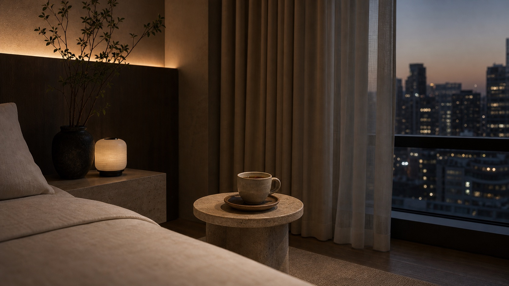
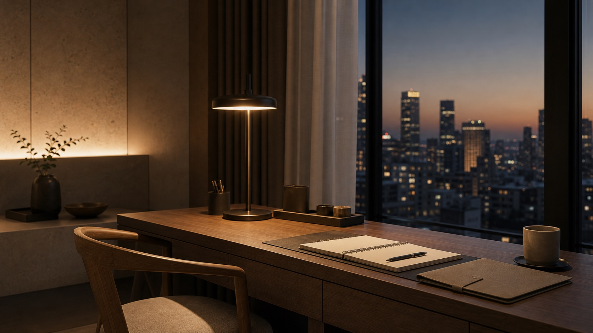
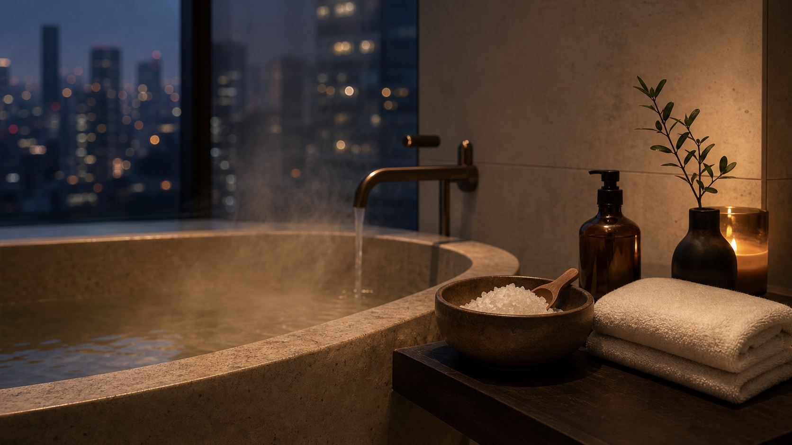
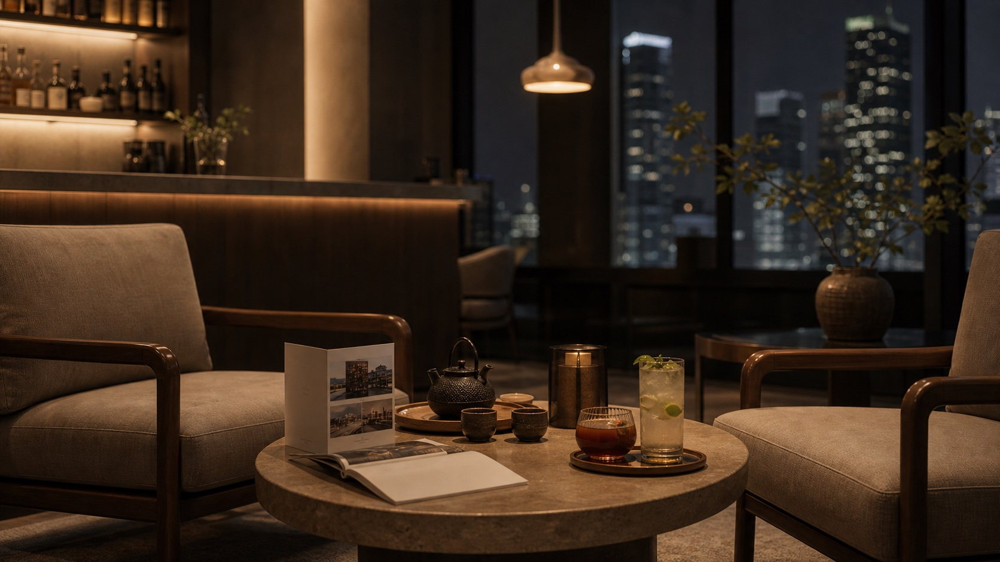

01Calm Mode
온전히 쉬고 싶은 날객실의 조도와 사운드를 낮추고, 따뜻한 허브티를 곁들입니다. 혼자만의 고요한 휴식이 필요한 날에 어울립니다.
허브티 · 저조도 조명 · 차분한 음악Your Own Stay
고객마다 다른 쉼의 방식을 위한 네 가지 스테이 모드
HOTEL YO:ON은 정해진 고급 서비스보다 머무는 사람의 컨디션과 목적에 맞춘 회복 방식을 제안합니다. 예약 단계에서 스테이 모드를 선택하면 객실과 안내, 작은 키트가 그날의 필요에 맞춰 준비됩니다.
Reserve with stay modeStay Modes
나에게 맞는 휴식 모드를 선택하세요

01객실의 조도와 사운드를 낮추고, 따뜻한 허브티를 곁들입니다. 혼자만의 고요한 휴식이 필요한 날에 어울립니다.
허브티 · 저조도 조명 · 차분한 음악
02업무에 집중할 수 있는 데스크 환경과 조명으로 출장 중에도 일과 휴식의 흐름을 편안하게 이어갈 수 있습니다.
데스크 세팅 · 집중 조명 · 미니 문구 키트
03따뜻한 배스와 아로마, 수면 루틴을 통해 하루의 긴장을 풀어냅니다. 몸과 마음을 깊이 쉬게 하고 싶은 날에 추천합니다.
배스 솔트 · 아로마 · 수면 루틴
04라운지와 바, 주변의 조용한 로컬 스폿을 안내드리며, 혼자 또는 함께 저녁을 여유롭게 보내고 싶을 때 어울립니다.
라운지 안내 · 바 메뉴 · 로컬 큐레이션